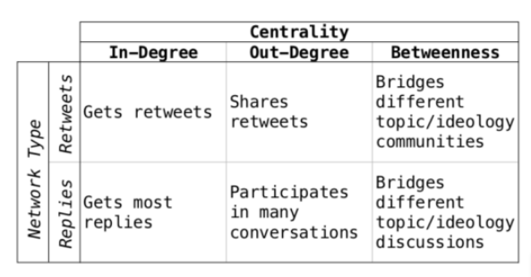

WordCloud
World cloud shows us the most common words used when searching for a keyword.

N-GRAMS
N-grams are the most frequently used word in a tweet. We have included unigrams, bigrams and trigrams. Using multiple words can give us more context
Unigram
Unigrams are the most common words appearing individually

Bigram
Bigrams are the most common words appearing as a pair

Trigram
Trigrams are the most common words appearing as a triplet

POS TAGGER
POS tags every word to their part of speech. (Noun, Adjective, Verb, Adverb)
We then visualize the most common words used for every POS
- POS = Klarifikasi dari peran dan fungsi sebuah kata dalam struktur kalimat
- Noun = Kata Benda
- Adjective = Kata Sifat
- Verb = Kata Kerja
- Adverb = Kata Keterangan
Verb Counter

Adjective Counter

Adverb Counter

Noun Counter

Timeseries Graph

NETWORK ANALYSIS

The larger node the more influential

NETWORK ANALYSIS METRICS
We want to identify users that are most influential by identifying users with the most In-Degree Centrality and Betweenness Centrality

Retweet Indegree Centrality
Reply Indegree Centrality
Retweet Betweeness Centrality
Reply Betweeness Centrality
Ratio Degree
The higher the ratio the more controversial
This is because we assume that retweets is a sign of endorsement.
If a tweet does not have a lot of retweets but recieves a lot of reply, we assume that a lot of people disagree with the tweet
| screen_name |
degree_rt |
degree_reply |
ratio |